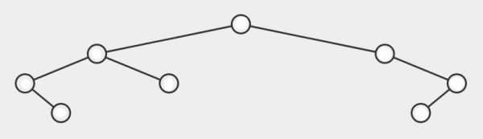

Disciplinas
ESTRUTURA DE DADOS Concluído
Iniciado em: segunda, 27 mai 2024, 19:26
Estado: Finalizada
Concluída: em segunda, 27 mai 2024, 19:46
Tempo empregado: 19 minutos 37 segundos
Notas: 1,00/1,00
Avaliar 10,00 de um máximo de 10,00(100%)
Materiais
Em uma árvore binária de busca, os nós mantêm uma propriedade em relação ao seu pai, dependendo do lado em que foram inseridos. O tempo de busca por um elemento na árvore é realizado, no pior caso, em O( n ) passos, sendo n o número de nós da árvore.
Considerando o modelo de árvore a seguir e um conjunto com os seguintes valores [33, 15, 8, 60, 81, 7, 6, 5], posicione na árvore os valores de forma a manter a propriedade de uma árvore binária.
 VISUALGO Resolução:- 33 → será o nó raiz da arvore, pois é o primeiro valor a ser inserido.
- 15 → é menor que 33, será inserido à esquerda de 33.
- 8 → é menor que 33, e menor que 15, será inserido à esquerda de 15.
- 60 → é maior que 33, será inserido à direita de 33.
- 81 → é maior que 33 e maior que 60, será inserido à direita de 60.
- 7 → é menor que 33, e menor que 8, será inserido à esquerda de 8.
- 6 → é menor que 33, e menor que 7, será inserido à esquerda de 7.
- 5 → é menor que 33, e menor que 6, será inserido à esquerda de 6.
Esta árvore mantém a propriedade ABB, para cada nó, todos os valores à esquerda são menores e todos os valores à direita são maiores.